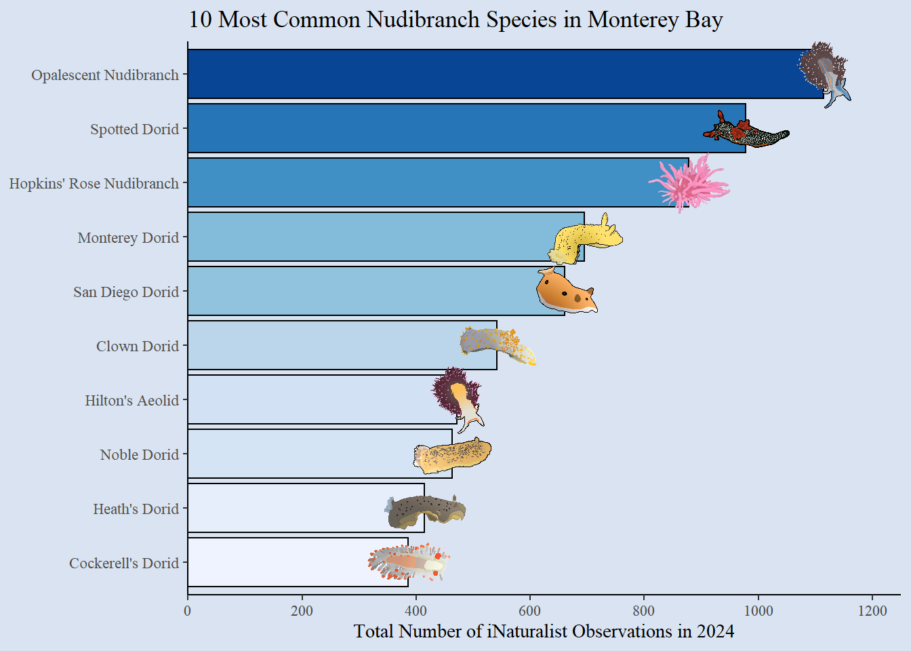

Portfolio Project
Data Description
The data I will be using was gathered from user observations on iNaturalist, using the following website: https://www.inaturalist.org/observations/export.
The data focuses on nudibranch observations in Monterey Bay Marine Sanctuary from January 1st to December 31st, 2024. It covers all user-submitted observations of animals in the order Nudibranchia that are considered “research grade”, meaning the nudibranch ID was confirmed by at least one other user. The data also only includes observations marked as open, meaning they have an associated location.
The dataset includes a number of variables, including observation id variables: id, uuid, user_id, user_name, and url. Time and date variables for the observation, including observed_on, time_observed_at, and time_zone. There are also location variables: place_guess, latitude, longitude, and positional_accuracy. The main variables I will focus on have to do with the observation’s taxonomy including it’s common_name, scientific_name, taxon_genus_name, taxon_family_name, and more for every taxon delineation from suborder to form. The number of agreements and disagreements along with other information included by the observer, such as tag_list and description.
Most of the data is character data, with the exception of observed_on, which is a date, and number_identification_agreements, number_identification_disagreements, latitude, longitude, and positional_accuracy, which are numerical variables.
The main questions I hope to answer with my data are:
- What were the most commonly-observed nudibranch species in Monterey Bay in 2024?
- How biodiverse were nudibranch populations in Monterey Bay in 2024?
- How do nudibranch populations change in Monterey Bay over time?
Data Cleaning
In order to create my first visualization, I needed to first create a new dataset from the original nudibranch dataset. Because a few species of nudibranch do not have a common name, I needed to use the coalesce() function to replace any common names that were marked as NA with the nudibranch’s scientific name. This allows us to separate these nudibranchs into distinct species instead of accidentally lumping them all together. I then summarized the total number of observations for each species of nudibranch, giving us the total observation count for each distinct species. Finally, using a piece of code modeled after a tutorial from Dean Chereden on YouTube, I added photos to each of the ten most common species of nudibranch to be used in the first visualization.
To create my second visualization, in order to create a dendrogram of all the species of nudibranchs, I needed to create a dataset with each of the individual nodes and their origins. To accomplish this, I created 5 datasets where common name, genus, family, superfamily, and suborder each served as nodes and combined them into one dataset using rbind(). I then used this dataset to form a graph object to be used in my dendrogram.
For my final visualization, much like my first, I used the the coalesce() function to replace any common names that were marked as NA. I then used a mutate() function to extract the month from the date variable.
Data Visualization 1
The first visualization is a bar chart of the 10 species with the highest number of observations. The visualization clearly shows readers which species have the highest and lowest number of observations by placing the barsin order of size. Not to mention, drawings of each of the nudibranchs were included in order help the readers connect with the data further by allowing them to see what each of these species look like. As shown in the graph, the most common species of nudibranch in the Monterey Bay is the opalescent nudibranch, followed by the spotted dorid, Hopkin’s rose, Monterey dorid, San Diego dorid, clown dorid, Hilton’s aeolid, noble dorid, Heath’s dorid, and Cockerell’s dorid.
Barplot of nudibranch observations
Data Visualization 2
The second visualization shows a dendrogram off all of the species of nudibranch found in the Monterey Bay area. It allows readers to observe the biodiversity of nudibranch species, genera, families, superfamilies, and suborders by showing them as nodes or points of divergence. The visualization shows readers each of the 75 species of nudibranch observed in the Monterey Bay area in 2024, along with the 47 unique genera, 31 unique families, 11 unique superfamilies, and 2 unique suborders of nudibranch in Monterey Bay along with how each one relates to each other. This specific dendrogram’s code was modeled off of a tutorial on the R Graph Gallery.

Dendrogram of nudibranchs in the Monterey Bay
Data Visualization 3
The final visualization is a ridgeline plot of nudibranch observations over each of the 12 months by species. This helps readers notice the seasonal trends of nudibranch populations, generally reaching their peak around May, June, or July, and reaching a lull from August to April (with some exceptions, of course). Readers may also identify a potential peak around October to December for some species in particular.
Warning in geom_density_ridges(trim = TRUE, scale = 5): Ignoring unknown
parameters: `trim`Picking joint bandwidth of 0.935
Ridgeline plot of nudibranch populations by month
Citations
Dean Chereden. Add IMAGES to Charts in RStudio [video]. Youtube. 2023 Apr 27, 8:16 minutes. [accessed 2025 May 1]. https://www.youtube.com/watch?app=desktop&v=Mt-lVqqZCVw.
Yan Holtz. c2016-2018. Dendrogram [Internet]. The R Graph Gallery. [updated 2025; cited 2025 May 15]. Available from: https://r-graph-gallery.com/dendrogram.html.